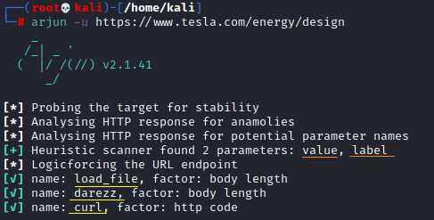

Arjun
Arjun
GITHUB:
https://github.com/s0md3v/ArjunInstallationUsagehttps://github.com/s0md3v/Arjun/wiki/Usage•
scan single url (-u) arjun -u https://api.example.com/endpoint
•
Specify HTTP method (-m) Arjun looks for GET method parameters by default. All available methods are: GET/POST/JSON/XML
arjun -u https://api.example.com/endpoint -m POST
•
Import targets ( -i) Arjun supports importing targets from BurpSuite, simple text file and raw request files. Arjun can automatically identify the type of input file so you just need to specify the path.
Note: Uncheck the "base64" option while exporting items in Burp Suite.
•
Export result (-oJ/-oB/-oT) You can export the result to BurpSuite or a txt/JSON file by using the respective option.
arjun -u https://api.example.com/endpoint -oJ result.json
-oJ result.json
-oT result.txt
-oB 127.0.0.1:8080
•
Specify injection point (--include) Arjun can detect parameters in a specified location when using JSON or XML method parameters by default. All available methods are: GET/POST/JSON/XML
arjun -u https://api.example.com/endpoint -m JSON --include='{"root":{"a":"b",$arjun$}}' OR
arjun -u https://api.example.com/endpoint -m XML --include='<?xml><root>$arjun$</root>'
•
Multi-threading (-t) Arjun uses 2 threads by default but you can tune its performance according to your network connection and target allowance.
arjun -u https://api.example.com/endpoint -t 10
•
Handle rate limits (--stable) sets the number of threads to 1 and introduces a random delay of 6 to 12 seconds between requests.
arjun -u https://api.example.com/endpoint --stable
1.
Two HTTP requests with different query parameters are made to the URL
(see github
here) and the response length, number of reflections, response code and other such factors are stored
for comparison in later steps
.
If any HTML form is found in the response, Arjun extracts field names from it and adds it to parameter name list for further checking.
2. A huge
list
of 25,980 parameters name list is loaded and
divided into 25 different parts
. All the parameter names of a part are sent in a single request with randomly generated values and hence a
total of 25 requests are made
.
Responses of these
requests are compared with the previous data and the parts which didn't cause any change in response are rejected
.
3. Every part which caused deviation in response is divided in two parts, and requests are made with each of them.
The part which doesn't cause any change is again rejected and
part which caused change is further divided into two parts. This process is continued until there's just one or no parameters are left in each part
. Empty parts are obviously rejected and the single parameter names are marked as valid.
Note:
Reflections are tracked separately which means if value of a parameter is found to be reflected, Arjun picks it up and flags it as potentially valid right away.
Example:• In
yellow after “name: ....” the possible parameters found by sending requests and analyzing responses
• In
orange after “Heuristic scanner ....” are the possible parameters that are been found by analyzing the source code of the page